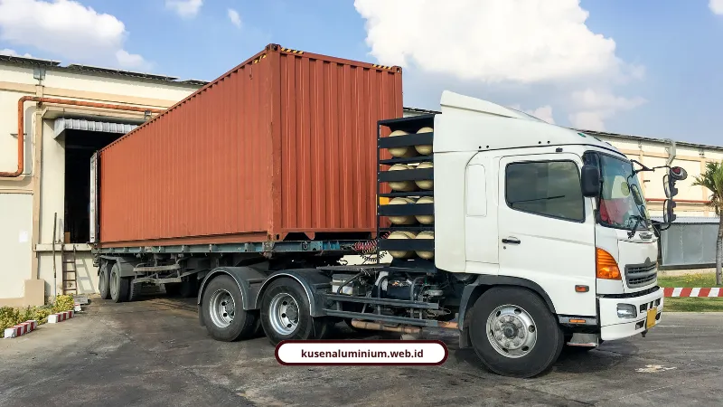
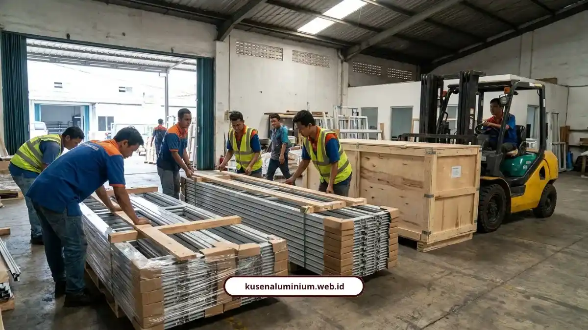

Pengiriman Kusen Medan, Presisi dari Malang

📌 Ringkasan Inti
Pengiriman kusen aluminium dari workshop Malang menuju Medan menempuh perjalanan ribuan kilometer lintas pulau, sehingga membutuhkan sistem proteksi komprehensif agar profil presisi tetap terjaga tanpa risiko bengkok atau tergores:
- Proteksi fisik menyeluruh meliputi pelindung sudut (corner guard), end cap profil, bubble wrap anti-statis, dan wooden crate berstandar kargo.
- Penyesuaian ekspansi termal di lokasi Medan melalui aklimatisasi 24–48 jam dan pemberian celah muai 3–5 mm untuk mencegah distorsi suhu panas.
- Pilihan moda pengiriman fleksibel melalui kargo laut terjadwal (5–6 hari) maupun kontainer 20 & 40 feet (FCL/LCL) berbiaya ekonomis.
- Perhitungan kubikasi transparan menggunakan standar CBM jalur laut yang jauh lebih hemat untuk material panjang 6 hingga 12 meter.
- Jaminan asuransi kargo All-Risk guna melindungi seluruh risiko bending, goresan finishing, maupun benturan selama perjalanan lintas laut.
- Tantangan Pengiriman dan Adaptasi Ekspansi Termal
- Bagaimana Cara Barang Dikirim dari Malang ke Medan?
- Kenapa Packing Kayu Penting untuk Pengiriman Antar Pulau?
- Apa Pengalaman Nyata Pengguna Jasa Ekspedisi untuk Barang Sebesar Ini?
- Bagaimana Kami Menjaga Presisi Kusen Sampai ke Tangan Anda?
- Pengiriman Aman dan Terencana Menjamin Kualitas Bangunan
Pengiriman kusen Medan dari workshop Malang membutuhkan packing kayu, proteksi sudut, dan asuransi kargo agar dimensi presisi tetap terjaga. Kami memastikan setiap tahap pengiriman diawasi supaya barang sampai dalam kondisi utuh.
Banyak orang mengira urusan kusen aluminium selesai begitu barang keluar dari workshop. Padahal justru di fase pengiriman inilah risiko kerusakan paling besar terjadi, apalagi untuk jarak Malang ke Medan yang melintasi pulau.
Profil ekstrusi aluminium untuk kusen, pintu, dan jendela biasanya punya panjang standar 6 meter, bahkan ada yang sampai 12 meter untuk kebutuhan struktur khusus. Barang sepanjang itu gampang bengkok kalau penyangganya asal-asalan saat naik kendaraan.
Permukaan finishing anodized atau powder coating juga rawan tergores dan penyok kalau posisinya bertumpuk tanpa pelindung. Ini kenapa proses packing bukan hal yang bisa disepelekan.
Tantangan Pengiriman dan Adaptasi Ekspansi Termal
Ada satu tantangan teknis lain yang sering luput dari perhatian orang awam, yaitu ekspansi termal. Pada suhu di atas 35 derajat Celsius, aluminium bisa memuai 2 sampai 3 mm per meter.
Karena itu, sebelum dipasang, kami selalu terapkan beberapa langkah penyesuaian di lokasi:
- Material didiamkan dulu 24 sampai 48 jam di lokasi proyek supaya beradaptasi dengan suhu dan kelembapan setempat
- Celah ekspansi 3 sampai 5 mm disisakan di kedua sisi kusen
- Jarak anchor dirapatkan jadi tiap 40 sampai 50 cm, bukan 60 cm seperti standar umum
- Sealant polyurethane atau polysulfide dipakai karena fleksibel dan tahan UV
Kalau Anda ingin tahu lebih jauh soal bagaimana kami membangun sistem prefabrikasi ini dari awal hingga siap kirim, penjelasan lengkapnya ada di artikel utama soal jasa kusen aluminium yang melayani Medan.

Bagaimana Cara Barang Dikirim dari Malang ke Medan?
Ada beberapa opsi moda pengiriman yang biasa dipakai untuk mengangkut material sebesar dan sepanjang kusen aluminium. Setiap opsi punya karakter waktu dan tarif yang berbeda.
Untuk pengiriman berbasis berat (kiloan), tarif dasar mulai dari Rp5.500 per kg dengan minimal muatan 50 kg.
Tarif per Kecamatan di Medan
- Medan Maimun: sekitar Rp6.000 per kg
- Medan Petisah, Polonia, Medan Timur: sekitar Rp6.300 per kg
- Estimasi waktu tempuh: sekitar 10 sampai 12 hari kerja
Kapal Kargo Terjadwal
- Waktu tempuh lebih cepat: sekitar 5 sampai 6 hari sejak kapal berangkat
- Rumus volume:
Panjang (cm) x Lebar (cm) x Tinggi (cm) / 4000
Untuk proyek skala besar, ada juga opsi kontainer, baik FCL untuk muatan penuh maupun LCL untuk muatan gabungan. Kontainer ukuran 20 feet punya dimensi dalam sekitar 5,8 x 2,3 x 2,3 meter, sementara ukuran 40 feet dimensi dalamnya sekitar 11,58 x 2,3 x 2,6 meter. Estimasi waktunya sekitar 7 sampai 8 hari sejak keberangkatan.
Khusus material panjang 6 sampai 12 meter, biasanya dipakai truk trailer atau tronton flatbed yang dilengkapi surat izin jalan resmi. Untuk lokasi dengan akses jalan sempit di Medan, barang dialihkan dulu ke kendaraan lebih kecil sebelum sampai ke titik proyek.
Rumus Perhitungan Kubikasi (CBM Jalur Laut):
Panjang (cm) x Lebar (cm) x Tinggi (cm) / 1.000.000. Cara ini jauh lebih hemat dibanding pengiriman udara, apalagi untuk material berat dan bervolume besar seperti kusen aluminium.
Ekspedisi & Pengiriman Kusen Aluminium Antar Pulau Presisi
Melayani pengadaan dan pengiriman kusen aluminium custom dari Malang ke seluruh wilayah Medan dan Sumatera Utara dengan packing kayu kokoh, asuransi All-Risk, dan panduan teknis pemasangan.
Kenapa Packing Kayu Penting untuk Pengiriman Antar Pulau?
Karena tanpa packing yang tepat, barang berisiko rusak akibat benturan dan tumpukan selama perjalanan laut yang bisa memakan waktu berhari-hari. Packing kayu berfungsi sebagai lapisan pertahanan utama.
Beberapa standar proteksi yang kami perhatikan dalam pengiriman kusen aluminium meliputi:
- Corner guard atau pelindung sudut dari plastik atau karton tebal
- End cap di ujung-ujung profil aluminium
- Bubble wrap anti statis yang tidak merusak lapisan finishing
- Webbing strap sebagai pengikat, bukan tali besi yang bisa menggores permukaan
Untuk pengiriman B2B lintas pulau dalam volume besar, jasa packing kayu berbentuk wooden crate sangat direkomendasikan karena mampu meredam benturan dan menjaga stabilitas saat proses stacking di kapal maupun gudang.
Selain packing fisik, asuransi kargo All-Risk khusus material teknik juga jadi lapisan perlindungan tambahan untuk menjamin risiko kerusakan fisik, goresan, maupun bending selama perjalanan.
Apa Pengalaman Nyata Pengguna Jasa Ekspedisi untuk Barang Sebesar Ini?
Beberapa ulasan dari pengguna jasa ekspedisi material menunjukkan konsistensi soal ketepatan waktu dan keamanan barang selama proses pengiriman.
"Sudah kirim 3x lewat Papandayan. Selalu dgn Dimas dan diambil barangnya dgn Pak Cholis. Terima kasih."
"Barang aman, tepat waktu. Pak Dimas fast respon."
"Pelayanan baik, waktu pengiriman akurat, admin Dimas dan Rendi ramah. Terima kasih Papandayan Cargo. Sukses selalu."
Pola yang muncul dari ulasan-ulasan ini jelas, yaitu ketepatan waktu dan komunikasi yang responsif jadi faktor penentu kepuasan pengiriman material konstruksi antar pulau.
Bagaimana Kami Menjaga Presisi Kusen Sampai ke Tangan Anda?
Kami tidak asal kirim barang jadi lalu lepas tangan. Setiap kusen yang keluar dari workshop Malang sudah melewati tahap pengecekan dimensi dan kualitas sebelum dikemas.
Setelah tiba di lokasi Medan, kami juga memberi panduan aklimatisasi dan celah ekspansi kepada tim pemasangan supaya hasil akhirnya presisi, bukan cuma cantik di kertas RAB.
Kalau Anda penasaran soal standar pengecekan mutu yang kami terapkan sebelum barang berangkat, ada penjelasan lebih detail di artikel terpisah soal kontrol kualitas kusen sebelum pengiriman.
"Kusen dengan toleransi 0,5 mm di workshop bisa rusak seketika di jalan jika packing tidak memperhitungkan getaran laut dan lendutan material panjang. Wooden crate kokoh dengan webbing strap elastis dan kalkulasi ekspansi termal adalah kunci mengapa kusen kami tetap presisi saat tiba di lokasi proyek Medan."
Pengiriman Aman dan Terencana Menjamin Kualitas Bangunan
Pengiriman kusen Medan bukan sekadar urusan logistik biasa. Ada faktor presisi dimensi, proteksi material, sampai penyesuaian pemasangan akibat ekspansi termal yang harus diperhitungkan sejak awal.
Kami menangani seluruh proses ini, mulai dari fabrikasi presisi di Malang sampai instalasi akhir di lokasi Medan, supaya Anda tidak perlu pusing memikirkan detail teknisnya sendiri.
Kalau Anda ingin lihat contoh hasil kerja kami, silakan mampir ke halaman Galeri, atau hitung dulu estimasi biaya proyek Anda lewat Estimator Biaya.
FAQ Seputar Pengiriman Kusen Medan
Melalui kapal kargo laut terjadwal memerlukan waktu 5–6 hari sejak keberangkatan kapal, sedangkan pengiriman kargo reguler berkisar antara 10–12 hari kerja.
Aman, karena profil panjang dikemas menggunakan wooden crate (peti kayu solid) dengan penyangga berkala, pelindung sudut, strapping webbing, dan dilindungi asuransi kargo All-Risk.
Proses aklimatisasi ini penting untuk menstabilkan suhu profil aluminium setelah perjalanan laut dan menyesuaikan dengan kelembapan setempat agar tidak terjadi distorsi pemuaian saat dipasang.